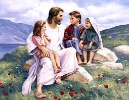

প্রারম্ভে শব্দ ছিল

একটি গ্র্যান্ড প্রবেশদ্বার?
প্রতি ডিসেম্বরে, আমরা বছরের সবচেয়ে বড় উদযাপনের প্রত্যাশা করতে শুরু করি: বড়দিন! সমস্ত দোকান লাইট এবং টিনসেল দিয়ে ঝলমল করছে (প্রথম এবং প্রতি বছরের শুরুতে, মনে হয়), আমরা আমাদের বাড়ির চারপাশে আলো জ্বালিয়ে একটি গাছ সাজাই, এমনকি শহর ও শহরের রাস্তাগুলি অনেক ভবনের চারপাশে মিটমিট করে আলোয় জ্বলজ্বল করে। আর সব থেকে বড় উত্তেজনা? উপস্থাপনা ! আমরা কি পাব? আমরা যা আশা করছি তা কি হবে? আমরা 25 ডিসেম্বরের জন্য অপেক্ষা করতে পারি না!

একটি খুব শান্ত প্রবেশদ্বার
তাহলে, এটা কি 2000 বছর আগে হয়েছিল? লোকেরা কি প্রত্যাশিতভাবে অপেক্ষা করছিল: তারা কি যীশুর জন্মের প্রত্যাশায় তাদের সমস্ত ঘর সাজিয়েছিল? এই দীর্ঘ প্রতীক্ষিত জন্ম উদযাপন করার জন্য তারা কি একে অপরের জন্য উপহার কিনেছিল? যখন তিনি জন্মগ্রহণ করেছিলেন, তখন কি সারা বিশ্বে ঘোষণা হয়েছিল যে পরিত্রাতা শেষ পর্যন্ত এসেছেন?
পুরোপুরি না।

যীশু যখন বেথলেহেমে জন্মগ্রহণ করেছিলেন, যাকে ডেভিডের শহরও বলা হয় (মনে আছে?), শুধুমাত্র মুষ্টিমেয় লোকই এটি সম্পর্কে সত্যিই সচেতন ছিল। সেখানে যীশুর মা মরিয়ম এবং তার বাগদত্তা জোসেফ ছিলেন। মেরি এবং জোসেফ যে সরাইখানার আস্তাবলের মালিক ছিলেন তারা সম্ভবত জানেন যে মহিলাটি জন্ম দিয়েছে, কিন্তু তাদের কাছে এর কোন বিশেষ তাৎপর্য ছিল না।
কিন্তু স্বর্গে দারুণ আনন্দ ছিল, আমরা জানি, কারণ লূক 2:8-14 আমাদেরকে বলে যে যীশুর জন্মের রাতে ফেরেশতাদের একটি বড় দল কিছু মেষপালকের কাছে হাজির হয়েছিল। তারা শুধু ঘোষণাই করেনি যে যীশু নামে একটি শিশুর জন্ম হয়েছে, কিন্তু তারা আসলে ঘোষণা করেছিল যে তিনিই সেই মশীহ যার জন্য ইহুদিরা এতদিন ধরে অপেক্ষা করছিল!
কিন্তু অন্য কেউ এটি খুঁজে বের করতে শুরু করতে আরও ত্রিশ বছর লাগবে।
চার পুরুষ, চার গল্প

যীশুর মৃত্যু, পুনরুত্থান এবং স্বর্গে আরোহণের পরের বছরগুলিতে, চারজন ভিন্ন ব্যক্তি যিশুর জীবন সম্পর্কে লিখতে অনুপ্রাণিত হয়েছিল। নিউ টেস্টামেন্টের প্রথম চারটি বইয়ের নাম দেওয়া হয়েছে সেই পুরুষদের জন্য যারা এই জীবনী লিখেছেন (তাদেরকে সাধারণত গসপেল বলা হয়): ম্যাথিউ, মার্ক, লুক এবং জন।
তারা একে অপরের সাথে এটি নিয়ে আলোচনা করেনি; তারা হয়তো জানত না যে অন্য কেউ যীশুর গল্প লিখছে। ম্যাথিউ, লুক এবং জন প্রায় নিশ্চিতভাবে মার্কের গসপেল পড়েছিলেন; পণ্ডিতরা বিশ্বাস করেন যে এটিই যিশুর প্রথম জীবনী লেখা হয়েছিল। কিন্তু চারটি গসপেল একে অপরের থেকে স্বাধীনভাবে লেখা হয়েছিল।

যখন একজন ব্যক্তি একটি ঘটনা সম্পর্কে একটি গল্প বলে, তখন সে সাধারণত তাদের মতে, সবচেয়ে গুরুত্বপূর্ণ অংশগুলি অন্তর্ভুক্ত করার চেষ্টা করবে। ম্যাথিউ, মার্ক, লূক এবং জনের ক্ষেত্রেও তাই হয়েছিল। কিছু কিছু ঘটনা অন্তর্ভুক্ত করে যা অন্যরা করে না; কেউ কেউ ঘটনাকে একটু ভিন্ন ক্রমে বলেন।
উদাহরণস্বরূপ, শুধুমাত্র ম্যাথিউ এবং লুক যীশুর জন্মের গল্প বলে। সম্ভবত, লুকের মনে, মানুষের জন্য এটা জানা গুরুত্বপূর্ণ ছিল যে যীশু একজন কুমারী মেয়ে থেকে জন্মগ্রহণ করেছিলেন। মরিয়মের বাগদত্তা, জোসেফ, যীশুর পিতা ছিলেন না; যীশু ঈশ্বরের পুত্র ছিলেন। (লুক 1:26-38)
ম্যাথিউ এর গসপেল যীশুর পারিবারিক গাছ দিয়ে শুরু হয়। আপনার কি মনে আছে, সেই বহুকাল আগে, ঈশ্বর কীভাবে আব্রাহামকে প্রতিশ্রুতি দিয়েছিলেন যে তার বংশধরদের মধ্য থেকে একজন রাজার মাধ্যমে পৃথিবী আশীর্বাদ পাবে (জেনেসিস 12:3)? ম্যাথিউ আমাদের দেখাতে যত্ন নেন যে যীশু রাজা ডেভিডের সরাসরি বংশধর ছিলেন, যিনি আব্রাহামের সরাসরি বংশধর ছিলেন। যীশু সেই প্রাচীন ভবিষ্যদ্বাণীর পরিপূর্ণতা ছিলেন।
মার্ক এবং জনের ক্ষেত্রে, তারা মনে করেন যে, তারা যখন যীশু সম্পর্কে লিখছিলেন, তখন সবাই জানত যে তারা কার সম্পর্কে কথা বলছে: পৃথিবীতে তাঁর দিনগুলিতে, যীশু খুব, খুব বিখ্যাত ছিলেন। সুতরাং, মার্ক এবং জন যীশুর গল্প শুরু করেন যখন তিনি তাঁর পার্থিব পরিচর্যা শুরু করেছিলেন, অর্থাৎ, যখন যীশুর বয়স ছিল প্রায় ত্রিশ বছর।
একজন অপ্রত্যাশিত মশীহ

যখন আমরা ভাববাদীদের সম্পর্কে শিখেছি যারা ভবিষ্যদ্বাণী করেছিলেন যে ইস্রায়েল অ্যাসিরিয়া এবং ব্যাবিলনে পতন হবে, আমরাও শিখেছি যে সেই একই ভাববাদীরা ভবিষ্যদ্বাণী করেছিলেন যে একজন রাজা, একজন মশীহ, একজন ত্রাণকর্তা রাজা ডেভিডের লাইন থেকে বেরিয়ে আসবেন। এই ভবিষ্যদ্বাণীগুলি ইহুদিদের আশা দিয়েছিল যে ইস্রায়েল আবার একটি মহান জাতিতে পরিণত হবে, যে একজন রাজা আসবেন ইস্রায়েলের সমস্ত শত্রুদের জয় করতে এবং তাদের একটি সুপার পাওয়ার বানাবেন যা বিশ্ব শাসন করবে।.
কিন্তু ইহুদিরা সমস্ত ভবিষ্যদ্বাণী পাঠ করেনি; অথবা, যদি তারা ছিল, তারা ব্যাপকভাবে তাদের কিছু ভুল বুঝেছে. নবীরা মশীহ ঈশ্বরের পাঠানোর দুটি বর্ণনা দিয়েছেন। একজন ছিল, প্রকৃতপক্ষে, একজন শক্তিশালী শাসক হওয়া। ইহুদিরা যা বুঝতে পারেনি তা হল যে এই রাজা সবচেয়ে অসামান্য জায়গা থেকে আসবেন এবং তিনি খুব ধুমধাম করে আসবেন না (অস্পষ্ট ছোট্ট বেথলেহেমের শান্ত রাতের কথা মনে আছে?)। এই নতুন রাজা এমন একজন মানুষ হবেন যিনি পৃথিবীতে দুঃখ, শোক এবং বেদনা জানবেন, রাজত্ব ও ক্ষমতা নয়।
একজন পরাজিত, মনোবলহীন মানুষ হিসেবে, ইহুদিরা একজন নম্র ব্যক্তি যীশুর মতো একজন মশীহ খুঁজছিল না; তারা তার চেয়ে অনেক বেশি দর্শনীয় কাউকে খুঁজছিল।
আর তাই হল, যীশু যখন এসেছিলেন এবং তাদের মধ্যে বাস করেছিলেন, তখন তারা মশীহকে দেখে চিনতে পারেনি৷
যীশুর শিক্ষা
মনে রাখবেন যে যীশু এমন একটি জায়গায় বেড়ে উঠেছিলেন যা অন্য দেশের শাসনের অধীনে ছিল: এই সময়ের মধ্যে, এটি ছিল শক্তিশালী রোমান সাম্রাজ্য। যীশু খুব সাধারণ সমাজে বেড়ে উঠেছেন; ইহুদিরা খুব ধার্মিক ছিল, এবং তার প্রতিবেশীরা ছিল কৃষক বা জেলে বা ব্যবসায়ী (জোসেফ, তার মায়ের স্বামী, ব্যবসায় একজন কাঠমিস্ত্রি ছিলেন)।
সম্ভবত এই কারণে, যীশু গল্প বলার মাধ্যমে আধ্যাত্মিক সত্য শেখানোর চেষ্টা করেছিলেন, যাকে দৃষ্টান্ত বলা হয়, যা প্রায়শই তার সমাজের লোকেরা পরিচিত এবং বুঝতে পারত:

- একজন কৃষক তার জমিতে বীজ বপন করেন (ম্যাথু 13:2-23)
- একজন পুত্র যে তার পিতামাতার বিরুদ্ধে বিদ্রোহ করে, কিন্তু তার পাপের জন্য বড় অনুশোচনা নিয়ে তাদের কাছে ফিরে আসে (লুক 15:11-32)
- একজন মেষপালক যে তার একটি ভেড়া হারায় (ম্যাথু 18:10-14)

ফরীশীরা
যীশুর দিনে, পুরোহিতরা (বাইবেল তাদেরকে ফরীশীও বলে--একটি শব্দ যার অর্থ "বিচ্ছিন্ন") ইহুদিদের দৈনন্দিন জীবন শাসন করতেন। পুরোহিতরা ইস্রায়েলের বারোটি গোত্রের একটি থেকে এসেছিল যা ঈশ্বর বিশেষভাবে সেই ভূমিকার জন্য বেছে নিয়েছিলেন: লেবীয়রা (লেভির গোত্র থেকে)। তারা অতীতের মতো ইহুদিদের বিপথগামী হওয়া থেকে বিরত রাখাকে তাদের কাজ বলে মনে করত। এটা তাদের কাজ, তারা ভেবেছিল, মানুষের জন্য বাইবেল পড়া এবং ব্যাখ্যা করা। (মনে আছে যে ঈশ্বর সবার জন্য বাইবেল চান সে সম্পর্কে আমরা আগে কি বলেছিলাম?)
যীশু লেভি গোত্রের ছিলেন না, তাই যীশু পুরোহিত ছিলেন না।

একজন রাব্বি, বা বাইবেলের সত্য ও জ্ঞানের শিক্ষক হতে, একজন মানুষকে একটি বিশেষ রাব্বিনিকাল স্কুলে দীর্ঘ সময়ের প্রশিক্ষণের মধ্য দিয়ে যেতে হয়েছিল।
যীশু রাব্বিনিকাল স্কুলে যাননি, তাই ফরীশীরা তাকে একজন শিক্ষক হওয়ার জন্য "যোগ্য" বলে মনে করেনি।
তাই, তাঁর পরিচর্যার শুরু থেকেই যীশু ধর্মীয় শাসকদের সাথে মতবিরোধে ছিলেন। তবুও, যীশুর শিক্ষা শোনার জন্য অনেক লোক জড়ো হয়েছিল। দ্য সার্মন অন দ্য মাউন্ট নামে তাঁর সবচেয়ে বিখ্যাত শিক্ষার একটিতে (এটি ম্যাথিউ 5 এবং লুক 6 উভয়েই পাওয়া যেতে পারে), কার্যত তিনি যে প্রতিটি পয়েন্ট করেছেন তা ফরীশীরা লোকেদের যা বিশ্বাস করত তার বিপরীত ছিল।
কিছু প্রধান ধারণা যা যীশু তাঁর অনুসারীরা শিখতে চেয়েছিলেন:
- ঈশ্বর মানুষকে ভালবাসেন এবং চান যে তারা তাকে আবার ভালবাসুক। ঈশ্বরের প্রতি ভালবাসা দেখানোর একটি উপায় হল শুধু আইনের অক্ষর মেনে চলা নয়, বরং আইনের আত্মাকেও মেনে চলা। তাই, সৎ হওয়ার পাশাপাশি, যীশু তাঁর অনুসারীদেরকে করুণাময়, দয়ালু এবং ন্যায়পরায়ণ হতে বলেছিলেন।
- যীশু চান তাঁর অনুগামীরা তাদের ভালবাসার দ্বারা পরিচিত হোক: তাদের সহবিশ্বাসীদের জন্য ভালবাসা, এমনকি তাদের শত্রুদের জন্যও ভালবাসা। ঈশ্বর বিশ্বাসীদের তাদের পাপ ক্ষমা করার প্রতিশ্রুতি দিয়েছেন; তিনি আমাদের একে অপরকে ক্ষমা করতে চান।
যীশু তাঁর অনুসারীদের জানতে চেয়েছিলেন সবচেয়ে গুরুত্বপূর্ণ বিষয় হল যে তিনি, যীশু, ঈশ্বরের পুত্র ছিলেন এবং পাপ থেকে পরিত্রাণ শুধুমাত্র তাঁর মাধ্যমেই আসে৷ বাইবেলের সবচেয়ে বিখ্যাত আয়াতগুলির মধ্যে একটি ঘোষণা করে যে নতুন চুক্তি ঈশ্বর মানবজাতির সাথে তৈরি করেছিলেন, জন 3:16:
কারণ ঈশ্বর জগৎকে এতই ভালোবাসলেন যে তিনি তাঁর একমাত্র পুত্রকে দিয়েছেন, যাতে যে কেউ তাঁকে বিশ্বাস করে সে বিনষ্ট না হয়, কিন্তু অনন্ত জীবন পায়।
যীশুর এই ঘোষণা দুটি কারণে বৈপ্লবিক ছিল: প্রথমত, যীশু ঈশ্বরের পুত্র এই ধারণাটি অনেক ইহুদিদের কাছে অগ্রহণযোগ্য ছিল। একজন নিছক মানুষ কিভাবে ঈশ্বর হতে পারে? দ্বিতীয় ধারণা যেটি যিশুর দিনের ধর্মীয় নেতারা গ্রহণ করতে পারেননি তা হল যে পরিত্রাণ আর কেবল ইহুদিদের জন্য সংরক্ষিত ছিল না। যীশু বলেছিলেন যে যে কেউ তাকে বিশ্বাস করে সে ঈশ্বরের রাজ্যের অন্তর্ভুক্ত হতে পারে (জন 1:12)।
সদুসীদের
সাদ্দুকিস, একটি বিশিষ্ট, প্রায়ই ধনী, ইহুদিদের একটি দল যারা যীশুর দিনে বাস করত, রোমানদের সাথে এক ধরণের রাজনৈতিক ব্যবস্থা ছিল, যাতে তারা একটি নির্দিষ্ট পরিমাণ রাজনৈতিক ক্ষমতা উপভোগ করতে পারে। সাদ্দুসিরা কখনও কখনও তাদের সহযোগী ইহুদিদের কাছ থেকে রোমান ট্যাক্স সংগ্রহের কাজটি গ্রহণ করত এবং প্রায়শই এটি সম্পর্কে অসৎ ছিল, যার জন্য লোকেদের প্রকৃত পাওনার চেয়ে বেশি অর্থ প্রদানের প্রয়োজন ছিল যাতে তারা নিজেদের জন্য একটি অংশ রাখতে পারে। ঘৃণ্য রোমানদের সাথে ঘনিষ্ঠ সম্পর্কের কারণে অনেক ইহুদি জনগণ সাদ্দুসীদের বিশ্বাসঘাতক বলে বিবেচিত হয়েছিল।
ইহুদীদের মধ্যে প্রায়ই বিদ্রোহের কথা বলা হত; তারা রোমান শাসনের কঠোরতার অধীনে চাপা পড়েছিল। ইহুদী ও রোমানদের মধ্যে শান্তি বজায় রাখাকে সাদ্দুসিরা তাদের কাজ বলে মনে করত। ইহুদিরা রোমানদের যত কম ঝামেলা সৃষ্টি করত, তাই সাদ্দুসিরা ভেবেছিল, এটি সবার জন্য তত সহজ হবে।

যীশুর সাথে সমস্যা
যেমন আমরা আগে দেখেছি, যীশু অনেক লোককে শিক্ষা দিতে গিয়েছিলেন এবং ঈশ্বর ও তাঁর প্রেমের বিষয়ে সকলের কাছে সুসমাচার প্রচার করেছিলেন। ফরীশীরা এটা মোটেই পছন্দ করত না; তারা ইহুদিদের মধ্যে একমাত্র ধর্মীয় কর্তৃপক্ষ হতে চেয়েছিল। যীশু মানুষকে আধ্যাত্মিক বিষয়ে যাজকদের চেয়ে আরও গভীরভাবে চিন্তা করতে শিখিয়েছিলেন, এবং তারা এর জন্য তাকে ভালবাসত।

যীশু যে বিশাল জনসমাগমকে আকর্ষণ করছিলেন তা সদ্দূকীরাও পছন্দ করত না। মানুষের ভিড় সহজে নিয়ন্ত্রণ করা যাচ্ছিল না। যীশু যদি রোমের বিরুদ্ধে বিদ্রোহের জন্য তাঁর চারপাশের জনতা তাঁকে অনুসরণ করতে চান, তবে তারা এটি প্রতিরোধ করতে কী করতে পারে?
সদ্দূকীরা জানত যে এমনকি ইহুদিদের একটি বিশাল জনতাও রোমান সেনাবাহিনীর শক্তির সাথে কোন মিল ছিল না। যদি রোমানদের একটি ইহুদি বিদ্রোহ দমন করতে হয়, তারা তাদের একেবারে চূর্ণ করবে (এবং যীশুর পার্থিব জীবনের প্রায় 35 বছর পরে, তারা ঠিক তাই করেছিল)। তাদের রাজনৈতিক ক্ষমতা রোমানদের কাছে আর কোন অর্থেই হবে না, এবং সাদ্দুসীরা যীশুর মত তুমুল উত্তেজিত কারোর কারণে তাদের ক্ষমতা হারাবে না!

যীশু যে নিখুঁততম কাজ করেছিলেন, তা হল, লোকেদের কাছে ঘোষণা করা যে তিনি আসলে ঈশ্বরের পুত্র। যীশু তাদের বলেছিলেন যে তিনিই সেই মশীহ যার জন্য তারা এতদিন অপেক্ষা করছিল। ফরীশীদের কাছে, এটা ছিল ধর্মনিন্দা (ঈশ্বরের প্রতি চরম অসম্মান)! ইহুদি আইন অনুসারে, এটি একটি অপরাধ ছিল যার শাস্তি মৃত্যুদন্ড।
বার বার, যীশু তাঁর মশীহ হওয়ার দাবিকে সমর্থন করার জন্য লক্ষণ এবং অলৌকিক কাজগুলি সম্পাদন করেছিলেন: তিনি অসুস্থদের নিরাময় করেছিলেন, অন্ধ লোকেদের দেখা করেছিলেন এবং খোঁড়া লোকদের আবার হাঁটতে বাধ্য করেছিলেন। এমনকি তিনি একজন মানুষকেও মৃতদের মধ্য থেকে জীবিত করেছিলেন!
যীশুকে ফরীশীদের (কারণ তিনি লোকেদের তাদের কর্তৃত্বকে সন্দেহের কারণ করে তুলেছিলেন) এবং সদ্দূকীদের জন্য (কারণ তিনি তাদের ক্ষমতার জন্য হুমকি হতে পারেন) উভয়ের জন্য হুমকি হিসাবে বিবেচিত হয়েছিল।
ফরীশী এবং সদ্দূকীরা সাধারণত একে অপরের সাথে বন্ধুত্বপূর্ণ বা সহযোগিতামূলক ছিল না, কিন্তু এখন তাদের একটি সাধারণ শত্রু ছিল: যীশু।

এক রাতে, যীশু যখন প্রার্থনা করছিলেন, তখন জুডাস ইসকারিওট, একজন ব্যক্তি যিনি যীশুর সবচেয়ে ঘনিষ্ঠ বন্ধুদের (তার বারোজন শিষ্য) ছিলেন, তিনি ফরীশী এবং সাদ্দুকীদের একটি দলকে নিয়ে গিয়েছিলেন যেখানে তিনি জানতেন যে যীশু প্রার্থনা করতে পছন্দ করেন, গেথসেমানির বাগানে। যীশু গ্রেপ্তার হওয়াকে প্রতিরোধ করেননি, যদিও তিনি জানতেন যে তিনি কোন অপরাধ করেননি।
যীশুর অভিযুক্তরা তাঁকে মন্দিরের মহাযাজক কায়াফার কাছে নিয়ে গিয়েছিল, একটি গোপন বিচার করার জন্য। তারা কায়াফাসকে বলেছিল যে যীশু তাঁর মসীহ হওয়ার দাবির কারণে নিন্দার জন্য দোষী ছিলেন।

যখন তিনি মহাযাজকের সামনে দাঁড়ালেন, যীশু বললেন, "আমিই মশীহ, এবং আপনি আমাকে ঈশ্বরের ডানদিকে বসে থাকতে দেখবেন।" (মার্ক 14:62)
যদিও যীশুর বিরুদ্ধে "প্রমাণ" দেওয়ার জন্য মিথ্যা সাক্ষীদের জড়ো করা হয়েছিল, কায়াফাস সিদ্ধান্ত নিয়েছিলেন যে যীশুর বিবৃতি একাই অপরাধের স্বীকারোক্তি। তার রায় ছিল যীশুকে মৃত্যুদণ্ড দেওয়া উচিত।
ইহুদিরা রোমান গভর্নর পন্টিয়াস পিলেটের অনুমতি ছাড়া মৃত্যুদণ্ড কার্যকর করতে পারত না। যাজকরা যীশুকে পিলাতের সামনে নিয়ে এসে তাকে বলেছিলেন যে যীশু বিশ্বাসঘাতকতা করেছেন: যদি তিনি নিজেকে মশীহ বলে দাবি করেন, তারা বলেছিল, তিনি ইহুদিদের রাজা বলার মতোই। রোমান আইনে সিজার ছাড়া কেউ নিজেকে রাজা বলতে পারত না।
পিলাট সত্যিই ভাবেননি যে যীশু রাজা হওয়ার জন্য একটি গুরুতর দাবি করছেন, যেহেতু তিনি বিচারের সময় নিজের জন্য একটি প্রতিরক্ষাও দেননি। কিন্তু ইহুদি যাজকরা জেদ ধরেছিল যে যীশুকে মৃত্যুদণ্ড দেওয়া হোক। এমনকি যখন পীলাত তাদের একজন দোষী সাব্যস্ত খুনি, বারাব্বাকে মুক্ত করার বা যীশুকে মুক্ত করার বিকল্প প্রস্তাব দিয়েছিলেন, তখন লোকেরা সবাই যীশুকে মৃত্যুদণ্ড দেওয়ার জন্য চিৎকার করেছিল। (মার্ক 15:6-13)

যীশু মারা যান এবং পুনরুত্থিত হন
ক্রুশবিদ্ধকরণ ছিল রোমানদের দ্বারা ব্যবহৃত মৃত্যুদণ্ডের একটি রূপ। এটি মারা যাওয়ার সবচেয়ে লজ্জাজনক উপায় ছিল। যদিও যিশুকে সাধারণত একটি কটি কাপড় পরা হিসাবে শিল্পে চিত্রিত করা হয়, তবে তিনি আসলে তাঁর পোশাক খুলেছিলেন, যাতে তিনি সকলের দেখার জন্য নগ্ন ছিলেন। এটি বিশেষত লজ্জাজনক কারণ রোমানরা সবচেয়ে খারাপ ধরণের অপরাধীদের জন্য ক্রুশবিদ্ধকরণ সংরক্ষিত করেছিল।
মার খাওয়ার এক রাতের পরে, প্রথমে তার ইহুদি অভিযুক্তদের দ্বারা এবং তারপরে রোমান রক্ষীদের দ্বারা, যীশুকে তার নিজের ক্রুশটি সেই স্থানে নিয়ে যেতে বাধ্য করা হয়েছিল যেখানে তাকে ক্রুশবিদ্ধ করা হয়েছিল। তিনি তাঁর সমস্ত প্রহারে এতটাই দুর্বল ছিলেন যে তিনি ক্রুশের ভার সহ্য করতে পারেননি; তারা পথ দিয়ে যাওয়া একজন দাসকে যীশুর ক্রুশ বহন করার জন্য তৈরি করা হয়েছিল।
যখন তারা ক্রুশবিদ্ধকরণের জায়গায় পৌঁছেছিল, তখন রোমান প্রহরীরা যীশুর হাত ক্রুশে পেরেক দিয়েছিল। তারপর তারা তাঁর কাছ থেকে যে পোশাক নিয়েছিল তার জন্য জুয়া খেলে।
যদিও ক্রুশে মারা যাওয়ার জন্য সাধারণত বেশ কয়েক দিন তীব্র কষ্ট লেগেছিল, যীশুর ক্ষত এবং তার আগের রাত থেকে রক্তক্ষরণ সম্ভবত তাঁর মৃত্যুকে ত্বরান্বিত করেছিল। যেদিন তাকে ক্রুশে পেরেক দেওয়া হয়েছিল সেদিনই তিনি মারা যান।

গেথসেমানে বাগানে যখন তাকে গ্রেফতার করা হয়েছিল তখন যীশুর বেশিরভাগ বন্ধুরা তাঁকে ছেড়ে চলে গিয়েছিল, সেখানে আরিমাথিয়ার জোসেফ নামে একজন ব্যক্তি ছিলেন যিনি পিলাতের কাছে গিয়ে যীশুর মৃতদেহ চেয়েছিলেন যাতে এটি যথাযথভাবে সমাধিস্থ করা যায়।
তিনি যীশুর মৃতদেহকে লিনেন দিয়ে মুড়ে পাথর দিয়ে খোদাই করা একটি সমাধিতে রাখলেন। তারপর তিনি প্রবেশদ্বারের উপর একটি বড় পাথর গড়িয়ে দিয়ে তার পথে চলে গেলেন।
যীশু তাঁর শিষ্যদের অনেকবার বলার চেষ্টা করেছিলেন যে মানবজাতির পাপের জন্য তাকে চূড়ান্ত বলি হিসাবে মরতে হবে, কিন্তু তারা কখনই তাকে বুঝতে পারেনি। যীশু যদি ঈশ্বরের পুত্র হন, তারা যুক্তি দিয়েছিলেন, তিনি যদি ঈশ্বরের প্রতিশ্রুত মশীহ হন, তবে তিনি কীভাবে মারা যেতে পারেন?
যীশু মারা যাওয়ার পর তৃতীয় দিনে, কিছু মহিলা যারা তাঁর বন্ধু ছিল তারা তাঁর সমাধিতে গেল৷ ইহুদিদের রীতি ছিল মৃত ব্যক্তির শরীরে কিছু বিশেষ মশলা দিয়ে অভিষেক করা। যাবার সময় তারা নিজেদের মধ্যে ভাবতে লাগলো কিভাবে তারা কবরের সামনে গড়িয়ে পড়া পাথরটি সরাতে পারবে।

মহিলারা এসে অবাক হয়ে দেখলেন যে পাথরটি ইতিমধ্যেই গড়িয়ে গেছে এবং সমাধিটি খালি!
যীশুর মৃতদেহ যেখানে ছিল সেখানে একজন স্বর্গদূত বসেছিলেন, তিনি তাদের বললেন, "ভয় পেও না! যীশু যেমন বলেছিলেন তিনি ঠিক সেইভাবে মৃতদের মধ্য থেকে পুনরুত্থিত হয়েছেন!" ফেরেশতা মহিলাদের তাদের বন্ধুদের কাছে ফিরে যেতে এবং যীশু মৃতদের মধ্য থেকে পুনরুত্থিত হওয়ার মহান সংবাদটি তাদের বলতে বলেছিলেন। (মার্ক 16:6-7)
ইহুদিরা যেমন প্রতি বছর মিশরের দাসত্ব থেকে তাদের মুক্তির স্মরণে নিস্তারপর্ব উদযাপন করে, খ্রিস্টানরা ইস্টার সানডেকে ইতিহাসের সবচেয়ে গৌরবময় ঘটনা হিসাবে উদযাপন করে: যীশু মৃতদের মধ্য থেকে পুনরুত্থিত হয়েছিলেন, মানবজাতির উপর মৃত্যুর ক্ষমতাকে জয় করেছিলেন এবং সর্বকালের জন্য আমাদের পাপের ক্ষমা প্রদান করেছিলেন। !
স্বভাবতই, যীশুর বন্ধুরা যখন শুনল যে যীশু তাঁর সমাধিতে নেই তখন তা বিশ্বাস করতে পারেনি।
কিন্তু যীশু তাঁর পুনরুত্থানের পরে এগারোটি অবশিষ্ট শিষ্যদের কাছে বেশ কয়েকবার দেখা দিয়েছিলেন। তিনি কিভাবে অনেক ভবিষ্যদ্বাণীর পরিপূর্ণতা হয়েছিলেন সে সম্পর্কে তাদের সাথে কথা বলার জন্য তিনি অনেক সময় ব্যয় করেছিলেন এবং তাদের চোখ শেষ পর্যন্ত সমস্ত সত্যের প্রতি উন্মুক্ত হয়েছিল যা যীশু তাঁর ক্রুশবিদ্ধ হওয়ার আগে তাদের শেখানোর চেষ্টা করেছিলেন। (লুক 24:27)

যীশু স্বর্গে আরোহণ করেন
যীশু তাঁর পুনরুত্থানের পর চল্লিশ দিন ধরে শিষ্যদের কাছে উপস্থিত হতে থাকেন। একবার, খাবারের সময় তিনি তাদের সাথে ভাগ করে নিচ্ছিলেন, তিনি তাদের বলেছিলেন যে তারা তাদের কাছে প্রতিশ্রুত পবিত্র আত্মার উপহার না পাওয়া পর্যন্ত জেরুজালেম ছেড়ে যাবেন না। (জন 14:16)
শেষ উপলক্ষ্যে যখন যীশু তাদের কাছে আবির্ভূত হয়েছিলেন, তখন শিষ্যরা তাঁকে জিজ্ঞাসা করেছিলেন যে তিনি এখন ইস্রায়েলকে তার আগের গৌরব ফিরিয়ে আনতে চলেছেন কিনা। যীশু উত্তর দিয়েছিলেন যে শুধুমাত্র ঈশ্বর পিতারই এই ধরণের প্রশ্নের উত্তর জানতে হবে। (প্রেরিত 1:7)
আর যখন তারা সকলে তাঁর সাথে সেখানে দাঁড়িয়েছিল, তখন যীশু তাদের কাছ থেকে উঠতে শুরু করলেন৷ শিষ্যরা তাকিয়ে দেখল যতক্ষণ না তারা যীশুকে আর দেখতে পেল না। যীশু তাঁর পিতার সাথে থাকার জন্য স্বর্গে উঠেছিলেন। কিন্তু গল্প সেখানেই শেষ হয়নি। আসলে, এটা সবে শুরু ছিল!